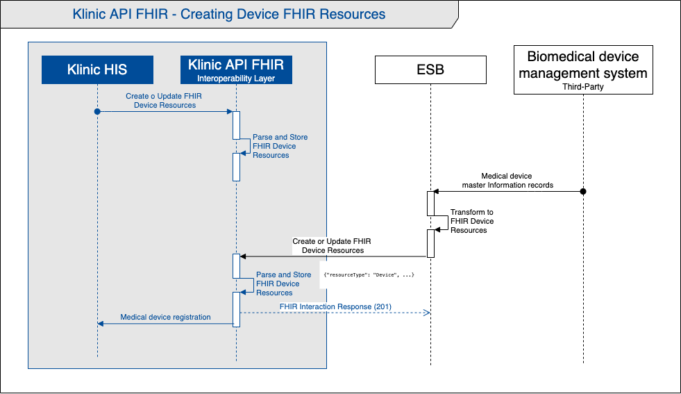
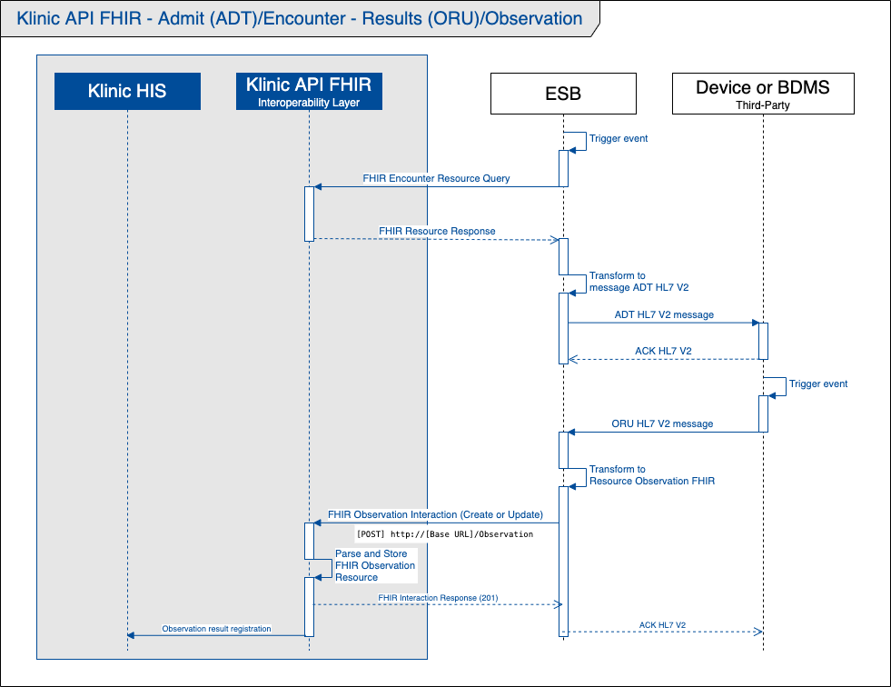

Klinic API FHIR Implementation Guide: IG Release 1 - Digital Ware S.A.
1.0 - trial-use
Klinic API FHIR Implementation Guide: IG Release 1 - Digital Ware S.A. - Local Development build (v1.0). See the Directory of published versions
Usually, interoperability between hospital information systems and biomedical equipment is done through HL7 V2x type message communication.
In this type of integration scenario, three types of software systems or applications are distinguished:
NOTE: Some biomedical devices such as laboratory test analyzers, or digital diagnostic imaging equipment, connect directly to specialized management systems such as LIS or RIS and from these, interoperability towards HIS and EHR systems is supported.
For the implementation of this type of interoperability scenarios for the communication of biomedical equipment and Klinic API FHIR, some type of middleware system is required (Ex: an ESB platform), which is in charge of transforming HL7 V2x message interactions (using protocol of MLLP communication) in HL7 FHIR (R4) resource interactions (using HTTP API RESTful).
If it is a requirement of the interoperability scenario, it is possible to create a collection of Device type FHIR resources in Klinic API FHIR, so that this information is available so that it can be consulted/read by other systems.
Device resources can be created (and updated) from records in Klinic-HIS or created (and updated) by third-party software that manages the information of the biomedical devices of the organization.

The ADT HL7 V2 message (A01, A02, A04, A05, A06, etc) that must be sent by the Middleware to the biomedical device or to the iomedical device management systems (BDMS), is obtained from the FHIR Encounter in progress resource (in-progress ), available in Klinic API FHIR.
The creation of the Encounter resource can be notified by using a MessageHeader resource.
Once the results obtained by the biomedical device are ready, a trigger event in the device or BDMS (R01, R30, etc) sends an ORU HL7 V2 message that is transformed into a FHIR Observation resource (or resources) and a Klinic API FHIR to through Middleware.

| Example id | Description |
|---|---|
| Example-Observation-7373847387f | Example of Glycated Hemoglobin (POCT) Measurement Results |
| Example-Observation-VitalSigns-vs3407 | Example of vital signs measurement results |
| Example-Observation-ArterialPressure-TA234880 | Example of blood pressure measurement result |
| Example-Observation-satO2-34798 | Oxygen saturation sO2 measurement result example |
| Example id | Description |
|---|---|
| Example-Device-43g37a87 | Example of a POCT type biomedical device |
| Example-Device-VitalSignsMonitor-B125GE | Example of a biomedical vital signs monitoring device |
| Example-Device-ArterialPressureMonitor-VC150 | Example of a biomedical blood pressure monitoring device |
| Example-Device-PulseOximetryMonitor-sO2 | Example of a biomedical pulse oximetry device |